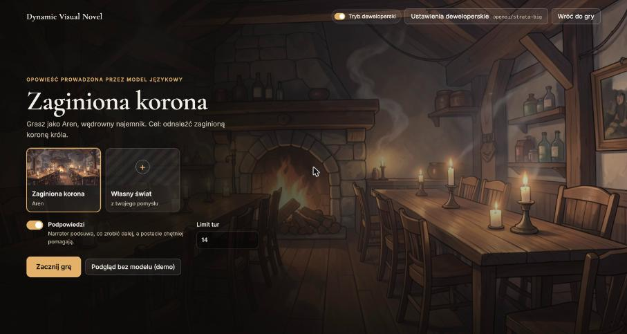

Jak uruchomić grę: na laptopie, z modelem tekstowym i z obrazami z GPU uczelni.
.env,
dostęp do VPN uczelni oraz login i klucz SSH do serwera GPU. W komendach niżej
<login> i <adres serwera> zastąp danymi, które dostałeś.Zainstaluj Docker Desktop i włącz go.
Na Windowsie najpierw wsl --install w PowerShellu (jako administrator), a wszystkie komendy wpisuj w terminalu Ubuntu.
git clone https://github.com/AntttPe/dynamic-visual-novel.git cd dynamic-visual-novel
Wklej do tego katalogu plik .env od zespołu (bez niego wpisz cp .env.example .env, wtedy działa tylko demo). Potem:
docker compose up -d --build # pierwszy raz kilka minut
Otwórz http://localhost:8000. Przycisk Podgląd bez modelu (demo) działa od razu, bez niczego więcej.
Model tekstowy działa na serwerze uczelni przez API. Wystarczy plik .env od zespołu i włączony VPN.
W menu przy nazwie modelu ma być zielona kropka. Najszybszy jest openai/strata-big
(wybór w Ustawieniach deweloperskich, prawy górny róg menu).
Obrazy rysuje model FLUX.2 klein na serwerze GPU. Potrzebne są dwa okna terminala i włączony VPN. Bez tego kroku gra też działa, tylko bez obrazów.
W pliku .env usuń # z początku linii z IMAGE_SERVER_URL, żeby wyglądała tak:
IMAGE_SERVER_URL=http://host.docker.internal:8420
i uruchom ponownie grę:
docker compose up -d --force-recreate app
ssh <login>@<adres serwera> nvidia-smi # czy GPU jest wolne (brak cudzych procesów) eval "$(conda shell.bash hook)" && conda activate ~/data/conda/dvn-images tmux ls # czy nie działa już stara sesja z serve.py tmux new -s dvn # nowa sesja, która przetrwa zerwanie połączenia
Jeśli tmux ls pokazuje sesję dvn, nie twórz nowej: wejdź do niej przez tmux attach -t dvn
i sprawdź, czy serwer już działa (wtedy przejdź do kroku C). Jeśli jest tam tylko pusta linia poleceń, wpisz dalsze komendy w niej.
Już w tmux. Nowa sesja nie ma aktywnego środowiska, więc aktywujesz je jeszcze raz:
eval "$(conda shell.bash hook)" && conda activate ~/data/conda/dvn-images cd ~/data/dvn && git pull && cd bench/images/consistency python serve.py
Poczekaj na napis Gotowe: 127.0.0.1:8420 (pierwszy raz ok. minuty, model się wczytuje). Zostaw to okno otwarte.
ssh -N -L 8420:127.0.0.1:8420 <login>@<adres serwera>
Komenda nic nie wypisuje i tak ma być. Zostaw to okno otwarte przez całą grę.
Odśwież http://localhost:8000 i zacznij grę. Tekst pojawia się po 30 do 90 s, obraz sceny kilka do kilkunastu sekund później.
# Okno 1 (serwer GPU): Ctrl+C # zatrzymuje serwer obrazów i zwalnia GPU exit # zamyka sesję tmux exit # wylogowanie z serwera # Okno 2 (tunel): Ctrl+C
ssh i wpisz tmux attach -t dvn.
| Co | Komenda albo rozwiązanie |
|---|---|
| Wyłącz / włącz grę | docker compose stop / docker compose start |
| Nowsza wersja gry | git pull, potem docker compose up -d --build |
Cannot connect to the Docker daemon | Włącz Docker Desktop. |
| Kropka przy modelu nie jest zielona | Włącz VPN uczelni i sprawdź, czy masz plik .env od zespołu. |
| Brak obrazów | Czy w oknie 1 jest napis Gotowe, a w oknie 2 działa tunel? Czy w .env linia IMAGE_SERVER_URL jest bez #? |
| Gram bez GPU i widzę błędy obrazów | Dodaj # przed IMAGE_SERVER_URL w .env i wpisz docker compose up -d --force-recreate app. |
| „Narrator nie zwrócił poprawnej odpowiedzi” | Wyślij akcję jeszcze raz. |
Więcej: README projektu na GitHubie, github.com/AntttPe/dynamic-visual-novel.